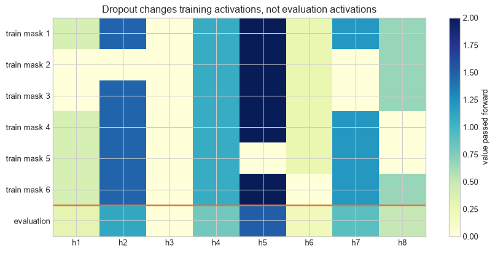

In Chapter 9, the degree-15 polynomial followed the 24 training observations closely but oscillated between them. Reducing its degree would remove some of that flexibility. Another option is to retain the same polynomial and change which of its possible fits the learning procedure prefers.
Ridge regularisation does this by making large coefficients costly. Neural networks use related but distinct choices: penalties on parameters, dropout during training, transformations of the input data, or a rule for retaining an earlier checkpoint. They all alter how the model is fitted, rather than merely changing the score reported at the end.
A controlled example
The chapter continues the noisy function from Chapter 9,
using a degree-15 polynomial. Rather than lowering the degree, ridge retains all polynomial terms and penalises large coefficients. This lets us see the effect of the preference without changing the model’s set of input terms.
The figure compares two rules with the same input features and polynomial degree. The coloured curve changes because the objective changes: the ridge fit is allowed to accept more error on the observed points when that avoids extreme coefficients.
Figure 11.1: Ridge regularisation retains a degree-15 model but suppresses the extreme oscillations of its unpenalised fit.
The penalty does not delete high-degree terms. It makes solutions with large coefficients more expensive. In this sample, the unpenalised model uses large coefficients to move sharply between observations; the penalised model accepts more training error to obtain a smoother function.
Regularisation. A change to the learning procedure that favours some fitted solutions over others. Penalties, dropout, augmentation, and early stopping act through different mechanisms; each requires a stated strength or selection rule.
Level 1 - Intuition
Regularisation expresses a preference among fitting solutions
Many procedures can fit a finite dataset similarly. Regularisation adds a preference among those fitting solutions. Ridge prefers smaller squared coefficients. Dropout trains changing subnetworks created by random masks. Augmentation treats selected transformations as preserving the target. Early stopping retains a parameter state reached before later optimisation steps.
These preferences can help when they match the problem. A penalty can be too strong, an augmentation can change the target, and early stopping can select a model before it has learned a useful pattern. Their strength is therefore selected with validation data, not assumed to be an improvement.
Figure 11.2: Regularisation methods intervene in the data, objective, architecture, or optimisation path.
The diagram prevents several category errors. Data augmentation changes the examples presented during training. A penalty changes the scalar objective. Dropout changes which units participate in a training pass. Early stopping selects a point along one optimisation trajectory. Their mechanisms are not interchangeable even when each reduces a validation error.
Regularisation remains part of model development
Regularisation changes the fitting procedure, so its type and strength are choices made during development. The validation and test roles from Chapter 9 still apply: a method that improves one development split has not yet established performance for every setting in which the model might be used.
The next step is to locate each preference in the training procedure: the data presented, the scalar objective, the active network, or the point chosen on an optimisation path. Level 2 follows those mechanisms separately because they require different checks.
Level 2 - Mechanics
L2 penalties exchange fit for coefficient size
With mean squared error and parameters \(w\), ridge minimises
The intercept is commonly excluded. When \(\lambda=0\), the objective is ordinary training loss. Increasing \(\lambda\) gives coefficient size more influence. A validation set selects among candidate values; choosing the value on the test set would make the test result part of development.
L1 replaces \(w_j^2\) with \(|w_j|\) and can produce exact zeros. L2 usually shrinks coefficients continuously. Their effects depend on feature scaling: penalising coefficients attached to differently scaled inputs does not express an equal preference across features.
Dropout changes the active network on each training pass
For activation vector \(h\) and retention probability \(q=1-p\), inverted dropout draws \(m_j\sim\operatorname{Bernoulli}(q)\) and computes
\[
\widetilde h_j=\frac{m_j}{q}h_j.
\]
The division preserves the expected activation because \(\mathbb E[\widetilde h_j]=h_j\). During evaluation, no mask is sampled and the full vector is used. Failing to call evaluation mode therefore makes predictions random and uses the wrong layer behaviour.
Code
activations=np.array([0.3,1.1,0.0,0.8,1.5,0.2,0.9,0.5]); q=0.75masks=rng.binomial(1,q,size=(6,len(activations)))training_outputs=masks*activations/qdisplay=np.vstack([training_outputs,activations])fig,ax=plt.subplots(figsize=(9,4.4))image=ax.imshow(display,cmap="YlGnBu",aspect="auto",vmin=0,vmax=2)ax.set_xticks(range(8),[f"h{i+1}"for i inrange(8)])ax.set_yticks(range(7),[f"train mask {i+1}"for i inrange(6)]+["evaluation"])ax.axhline(5.5,color=orange,linewidth=2)fig.colorbar(image,ax=ax,label="value passed forward")ax.set_title("Dropout changes training activations, not evaluation activations")plt.tight_layout(); plt.show()

Figure 11.3: Inverted dropout randomly masks activations during training and uses the full vector during evaluation.
The zero pattern differs across training rows. An already-zero activation remains zero regardless of the mask. Dropout does not identify irrelevant units and remove them permanently; it injects specified random masking during training (Srivastava et al. 2014).
Data augmentation encodes an invariance assumption
An image label may remain valid after a small translation, while a text label may not survive arbitrary word replacement. Each transformation therefore asserts something about the task. Mixup constructs convex combinations
and trains the model on interpolated examples and labels (Zhang et al. 2018). Whether this relation is meaningful depends on the input representation and target.
Augmented versions of one source observation must remain in the same split. Creating transformations before splitting can place near-duplicates in training and test data and produce optimistic evaluation.
Early stopping selects a checkpoint using validation data
Training loss often continues downward after validation loss reaches its minimum. Early stopping records validation performance and retains a checkpoint according to a pre-specified rule, commonly after no improvement for a fixed patience period.
Figure 11.4: Early stopping retains the checkpoint with the lowest validation loss rather than the final training checkpoint.
The selected epoch is itself a hyperparameter outcome. Repeatedly changing patience, smoothing, or metric after viewing the same validation curve can overfit validation feedback. Early-stopping rules and maximum training budget should be recorded (Prechelt 1998).
These mechanisms can be stated precisely as objectives, stochastic transformations, and selection rules. Level 3 derives the ridge objective and shows the corresponding implementation contracts; Chapter 14 later separates the operational roles of best, latest, and archival checkpoints.
Level 3 - Mathematics & Code
Ridge has a closed-form solution for linear features
For design matrix \(X\), response \(y\), and penalty matrix \(I_0\) whose intercept entry is zero,
\[
\hat w_\lambda=(X^\top X+\lambda I_0)^{-1}X^\top y.
\]
The matrix form makes the mechanism visible: the added diagonal stabilises directions in which \(X^\top X\) is poorly determined. Code should solve the system directly rather than calculate a matrix inverse.
Figure 11.5: Increasing the ridge penalty shrinks high-order polynomial coefficients and produces a validation-error minimum at an intermediate value.
Training error generally rises with the penalty because the optimiser is no longer minimising training error alone. Validation error first falls as unstable coefficients shrink, then rises when excessive shrinkage prevents the model from following the signal.
The penalty contributes its own gradient
For L2-regularised loss \(J(w)=L(w)+\lambda\lVert w\rVert_2^2\),
\[
\nabla_wJ=\nabla_wL+2\lambda w.
\]
Each update therefore contains a data-loss term and a shrinkage term. Some libraries define the penalty with a factor of \(1/2\), removing the 2 from its gradient. Reported \(\lambda\) values are not comparable without the convention.
Code
# Compare one scalar update with and without an L2 penalty.weight=1.4; data_gradient=-0.3; learning_rate=0.1; penalty=0.2plain_update=weight-learning_rate*data_gradientpenalised_update=weight-learning_rate*(data_gradient+2*penalty*weight)print(f"Without penalty: {plain_update:.3f}")print(f"With L2 penalty: {penalised_update:.3f}")
Without penalty: 1.430
With L2 penalty: 1.374
The data gradient alone increases the weight. The L2 term opposes that increase because the current weight is positive. A negative weight receives shrinkage toward zero from the opposite direction.
Dropout changes forward passes in training mode. AdamW applies decoupled weight decay rather than adding the L2 term to Adam’s gradient calculation (Loshchilov and Hutter 2019). For plain stochastic gradient descent, L2 regularisation and multiplicative weight decay can coincide under common conventions; with adaptive optimisers they are generally different operations.
Code
# A minimal early-stopping state machine.best_validation=float("inf"); patience=8; epochs_without_improvement=0; best_state=Nonevalidation_sequence=[0.52,0.44,0.39,0.36,0.35,0.351,0.354,0.356,0.359,0.361,0.364,0.366,0.369]for epoch,value inenumerate(validation_sequence,1):if value < best_validation: best_validation=value; epochs_without_improvement=0 best_state={"epoch":epoch,"validation_loss":value}else: epochs_without_improvement +=1if epochs_without_improvement >= patience:breakprint(best_state)
{'epoch': 5, 'validation_loss': 0.35}
Production code should save the model, optimiser, scheduler, precision scaler, epoch, and preprocessing state needed for recovery. Stopping without restoring the best checkpoint leaves the model at a later, worse validation state.
Level 4 - Research & Systems
Weight decay depends on the optimiser and parameter group
Decoupled weight decay separates shrinkage from the gradient-based Adam update (Loshchilov and Hutter 2019). Implementations commonly exclude biases and normalisation scale or offset parameters from decay. That is an architectural choice, not a universal rule. A reproducible configuration records parameter groups and their penalties rather than reporting one global number.
At scale, weight decay adds little arithmetic but interacts with fused optimiser kernels, sharded optimiser state, and checkpoint formats. Changing the optimiser implementation can change numerical order and defaults even when the headline hyperparameters match.
Dropout changes randomness and execution
Dropout was introduced as stochastic training of many thinned networks with a scaled full network at evaluation (Srivastava et al. 2014). Its effect depends on placement and rate. Attention dropout, residual dropout, and feed-forward dropout mask different tensors. Modern architectures with large datasets, normalisation, augmentation, or other stochastic components may use little or no dropout; the original empirical result is not a mandate for every network.
Distributed workers need independent but reproducible random streams. Accidentally sharing masks can reduce intended variation, while restoring a checkpoint without random-number state changes the continuation. Evaluation must disable dropout unless stochastic inference is deliberately used and reported.
Augmentation quality is a substantive property
Mixup and image transformations are often implemented cheaply on accelerators, but other augmentations can become data-pipeline bottlenecks. More importantly, throughput does not establish label preservation. Cropping may remove the object that defines an image label; temporal warping may change an event; language substitutions may alter meaning. Augmentation policies need domain evidence and error analysis, not only validation gains.
Synthetic data from another model add further dependencies: generator coverage, inherited bias, privacy, provenance, and duplication. Calling generated examples augmentation does not remove these evaluation requirements.
Early stopping consumes validation information
Early stopping saves computation when later epochs do not improve the selected metric, but asynchronous evaluation and distributed checkpoints complicate the definition of the best step. Validation results may arrive after training has advanced. Systems must retain candidate checkpoints until selection is resolved and record whether patience is measured in epochs, optimiser steps, tokens, or evaluation events.
The chosen checkpoint can vary across seeds. Reporting only the best run combines regularisation selection with run selection. Comparisons should use matched budgets and a declared aggregation across runs.
A regularisation audit links mechanism to evidence
An audit should record:
the observed overfitting pattern and metric used to diagnose it;
each regularisation mechanism, location, strength, and schedule;
feature scaling and parameters excluded from penalties;
augmentation transformations and the evidence that labels remain valid;
training/evaluation mode and random-state handling for dropout;
validation frequency, patience, minimum improvement, and restored checkpoint;
the number of settings and runs compared;
task performance, calibration, subgroup errors, compute, memory, and latency;
final assessment on data untouched by regularisation selection.
Regularisation is supported when this comparison improves the intended transfer criterion under a fixed evaluation design. A smaller training–validation gap caused by making both errors worse is not an improvement.
Common misconceptions
Regularisation is applied after a model overfits. It changes fitting, architecture, data, or checkpoint selection during development.
More regularisation always improves generalisation. Excessive strength causes underfitting.
L2 regularisation deletes unneeded features. It usually shrinks coefficients without making them exactly zero.
L1 selects the true variables. Exact zeros do not establish causal relevance or selection stability.
Weight decay and L2 are identical for every optimiser. They differ for adaptive updates unless implemented equivalently.
Dropout finds irrelevant neurons. It samples random masks during training.
Dropout should remain active for ordinary evaluation. Standard inference uses evaluation mode and the full scaled network.
Augmented observations are new independent data. They remain transformations of source observations.
Any label-preserving-looking transformation is valid. Validity depends on the task and data-generating process.
Early stopping uses training loss. It normally selects a checkpoint using validation performance.
The final epoch is the early-stopped model. The best earlier checkpoint must be restored.
A smaller generalisation gap is always better. Both training and validation performance can deteriorate together.
Regularisation repairs distribution shift. It may help under tested shifts but cannot establish transfer to unobserved conditions.
Exercises
Calculate the L2-penalised objective for a supplied loss, weights, and \(\lambda\).
Derive the L2 gradient when the penalty is \(\lambda\lVert w\rVert^2/2\).
Explain why feature standardisation affects L1 and L2 penalties.
Compare L1 and L2 coefficient behaviour.
Reproduce the ridge path with another training sample.
Select \(\lambda\) using validation data and report final test error.
Show what happens when the intercept is penalised.
Calculate the expected output of inverted dropout.
Apply three dropout masks by hand to a four-element activation vector.
Compare model predictions in train() and eval() modes.
Design one defensible and one invalid augmentation for a chosen task.
Explain why augmented variants must remain in the same data split.
Implement mixup for a mini-batch and inspect mixed labels.
Implement patience-based early stopping and restore the best checkpoint.
Compare early stopping across five random seeds.
Explain decoupled weight decay in AdamW.
Create optimiser parameter groups that exclude biases from decay.
Design a controlled comparison of dropout rates.
Identify which random states a distributed dropout run should checkpoint.
Write a regularisation audit for the Chapter 8 classifier.
Summary
Regularisation changes the learning problem so that some fitting solutions are preferred. L1 and L2 add parameter penalties, dropout changes the active network during training, augmentation changes the examples presented to the model, and early stopping selects a checkpoint along the optimisation path. Each method introduces assumptions and a strength or policy that must be selected.
Ridge regression shows the trade-off directly: larger penalties shrink coefficients and raise training error, while validation error can improve before excessive shrinkage causes underfitting. In neural networks, weight decay must be interpreted with the optimiser, dropout with training and evaluation modes, augmentation with label validity, and early stopping with checkpoint restoration.
At system scale, regularisation affects random streams, parameter groups, data throughput, evaluation cadence, and recovery state. The final evidence must come from data that did not determine those choices.
Looking ahead
Chapter 11 examines initialisation and gradient flow. Regularisation governs which fitted solutions are preferred; initialisation governs where optimisation starts and how signals and gradients propagate before useful parameters have been learned.
Further reading
Dropout is developed by Srivastava et al. (2014). Early-stopping criteria are compared by Prechelt (1998). Mixup is introduced by Zhang et al. (2018). Decoupled weight decay for adaptive optimisation is developed by Loshchilov and Hutter (2019).
Loshchilov, Ilya, and Frank Hutter. 2019. “Decoupled Weight Decay Regularization.” In International Conference on Learning Representations. https://arxiv.org/abs/1711.05101.
Srivastava, Nitish, Geoffrey Hinton, Alex Krizhevsky, Ilya Sutskever, and Ruslan Salakhutdinov. 2014. “Dropout: A Simple Way to Prevent Neural Networks from Overfitting.”Journal of Machine Learning Research 15 (56): 1929–58. https://jmlr.org/papers/v15/srivastava14a.html.
Zhang, Hongyi, Moustapha Cisse, Yann N. Dauphin, and David Lopez-Paz. 2018. “Mixup: Beyond Empirical Risk Minimization.” In International Conference on Learning Representations. https://openreview.net/forum?id=r1Ddp1-Rb.
Source Code
---title: "Regularisation"subtitle: "Changing the learning problem to improve transfer"---## The problemIn Chapter 9, the degree-15 polynomial followed the 24 training observations closely but oscillated between them. Reducing its degree would remove some of that flexibility. Another option is to retain the same polynomial and change which of its possible fits the learning procedure prefers.Ridge regularisation does this by making large coefficients costly. Neural networks use related but distinct choices: penalties on parameters, dropout during training, transformations of the input data, or a rule for retaining an earlier checkpoint. They all alter how the model is fitted, rather than merely changing the score reported at the end.### A controlled exampleThe chapter continues the noisy function from Chapter 9,$$y=\sin(\pi x)+0.3x+\varepsilon,\qquad \varepsilon\sim\mathcal N(0,0.25^2),$$using a degree-15 polynomial. Rather than lowering the degree, ridge retains all polynomial terms and penalises large coefficients. This lets us see the effect of the preference without changing the model's set of input terms.The figure compares two rules with the same input features and polynomial degree. The coloured curve changes because the objective changes: the ridge fit is allowed to accept more error on the observed points when that avoids extreme coefficients.```{python}#| label: fig-regularisation-intuition#| fig-cap: "Ridge regularisation retains a degree-15 model but suppresses the extreme oscillations of its unpenalised fit."#| fig-alt: "Two panels compare an oscillating unpenalised degree-15 polynomial with a smoother ridge-regularised degree-15 polynomial against the same noisy observations and true signal."import numpy as npimport matplotlib.pyplot as pltplt.style.use("seaborn-v0_8-whitegrid")blue, teal, orange, purple, grey ="#24527a", "#3a9188", "#d97745", "#7a5195", "#5f6b76"rng = np.random.default_rng(52)def true_function(x):return np.sin(np.pi*x)+0.3*xdef polynomial_design(x, degree=15):return np.column_stack([x**power for power inrange(degree+1)])def ridge_fit(X, y, penalty): penalty_matrix = np.eye(X.shape[1]); penalty_matrix[0,0] =0return np.linalg.solve(X.T@X + penalty*penalty_matrix, X.T@y)x_train=np.sort(rng.uniform(-1,1,24))y_train=true_function(x_train)+rng.normal(0,0.25,len(x_train))x_grid=np.linspace(-1,1,600)X_train=polynomial_design(x_train); X_grid=polynomial_design(x_grid)coef_none=ridge_fit(X_train,y_train,0); coef_ridge=ridge_fit(X_train,y_train,0.1)fig,axes=plt.subplots(1,2,figsize=(11,4.3),sharex=True,sharey=True)for ax,coef,title,colour inzip(axes,[coef_none,coef_ridge], ["No penalty","Ridge penalty: lambda = 0.1"],[orange,teal]): ax.plot(x_grid,true_function(x_grid),color=grey,linestyle="--",linewidth=2,label="true signal") ax.plot(x_grid,X_grid@coef,color=colour,linewidth=2.5,label="fitted model") ax.scatter(x_train,y_train,color=blue,s=28,label="training data") ax.set_title(title); ax.set_xlabel("x"); ax.set_ylim(-2.2,2.2)axes[0].set_ylabel("y"); axes[0].legend(fontsize=8)plt.tight_layout(); plt.show()```The penalty does not delete high-degree terms. It makes solutions with large coefficients more expensive. In this sample, the unpenalised model uses large coefficients to move sharply between observations; the penalised model accepts more training error to obtain a smoother function.::: {.concept-box .concept-core #concept-regularisation data-term="Regularisation" data-domain="Training and evaluation"}**Regularisation.** A change to the learning procedure that favours some fitted solutions over others. Penalties, dropout, augmentation, and early stopping act through different mechanisms; each requires a stated strength or selection rule.:::## Level 1 - Intuition### Regularisation expresses a preference among fitting solutionsMany procedures can fit a finite dataset similarly. Regularisation adds a preference among those fitting solutions. Ridge prefers smaller squared coefficients. Dropout trains changing subnetworks created by random masks. Augmentation treats selected transformations as preserving the target. Early stopping retains a parameter state reached before later optimisation steps.These preferences can help when they match the problem. A penalty can be too strong, an augmentation can change the target, and early stopping can select a model before it has learned a useful pattern. Their strength is therefore selected with validation data, not assumed to be an improvement.### Different methods intervene at different points```{python}#| label: fig-regularisation-map#| fig-cap: "Regularisation methods intervene in the data, objective, architecture, or optimisation path."#| fig-alt: "A four-column diagram maps data augmentation to training data, L1 and L2 penalties to the objective, dropout to the architecture, and early stopping to optimisation time."fig,ax=plt.subplots(figsize=(10.5,4.2))items=[("Data","augmentation",blue),("Objective","L1 / L2 penalty",teal), ("Architecture","dropout mask",orange),("Optimisation","early stopping",purple)]for i,(heading,method,colour) inenumerate(items): x=0.13+i*0.245 ax.text(x,0.66,heading,ha="center",weight="bold",color=colour,fontsize=12) ax.text(x,0.43,method,ha="center",va="center",color="white",weight="bold", bbox={"boxstyle":"round,pad=0.65","facecolor":colour,"edgecolor":"black"})if i<3: ax.annotate("",xy=(x+0.17,0.43),xytext=(x+0.09,0.43),arrowprops={"arrowstyle":"->","color":grey})ax.text(0.50,0.13,"all choices are selected through validation evidence",ha="center",color=grey)ax.set_xlim(0,1); ax.set_ylim(0,0.85); ax.axis("off")plt.tight_layout(); plt.show()```The diagram prevents several category errors. Data augmentation changes the examples presented during training. A penalty changes the scalar objective. Dropout changes which units participate in a training pass. Early stopping selects a point along one optimisation trajectory. Their mechanisms are not interchangeable even when each reduces a validation error.### Regularisation remains part of model developmentRegularisation changes the fitting procedure, so its type and strength are choices made during development. The validation and test roles from Chapter 9 still apply: a method that improves one development split has not yet established performance for every setting in which the model might be used.The next step is to locate each preference in the training procedure: the data presented, the scalar objective, the active network, or the point chosen on an optimisation path. Level 2 follows those mechanisms separately because they require different checks.## Level 2 - Mechanics### L2 penalties exchange fit for coefficient sizeWith mean squared error and parameters $w$, ridge minimises$$J(w)=\frac{1}{n}\sum_{i=1}^n(f_w(x_i)-y_i)^2+\lambda\sum_{j=1}^p w_j^2.$$The intercept is commonly excluded. When $\lambda=0$, the objective is ordinary training loss. Increasing $\lambda$ gives coefficient size more influence. A validation set selects among candidate values; choosing the value on the test set would make the test result part of development.L1 replaces $w_j^2$ with $|w_j|$ and can produce exact zeros. L2 usually shrinks coefficients continuously. Their effects depend on feature scaling: penalising coefficients attached to differently scaled inputs does not express an equal preference across features.### Dropout changes the active network on each training passFor activation vector $h$ and retention probability $q=1-p$, inverted dropout draws $m_j\sim\operatorname{Bernoulli}(q)$ and computes$$\widetilde h_j=\frac{m_j}{q}h_j.$$The division preserves the expected activation because $\mathbb E[\widetilde h_j]=h_j$. During evaluation, no mask is sampled and the full vector is used. Failing to call evaluation mode therefore makes predictions random and uses the wrong layer behaviour.```{python}#| label: fig-dropout-mechanics#| fig-cap: "Inverted dropout randomly masks activations during training and uses the full vector during evaluation."#| fig-alt: "A heatmap shows six dropout masks applied to eight activations during training, beside an unmasked evaluation row."activations=np.array([0.3,1.1,0.0,0.8,1.5,0.2,0.9,0.5]); q=0.75masks=rng.binomial(1,q,size=(6,len(activations)))training_outputs=masks*activations/qdisplay=np.vstack([training_outputs,activations])fig,ax=plt.subplots(figsize=(9,4.4))image=ax.imshow(display,cmap="YlGnBu",aspect="auto",vmin=0,vmax=2)ax.set_xticks(range(8),[f"h{i+1}"for i inrange(8)])ax.set_yticks(range(7),[f"train mask {i+1}"for i inrange(6)]+["evaluation"])ax.axhline(5.5,color=orange,linewidth=2)fig.colorbar(image,ax=ax,label="value passed forward")ax.set_title("Dropout changes training activations, not evaluation activations")plt.tight_layout(); plt.show()```The zero pattern differs across training rows. An already-zero activation remains zero regardless of the mask. Dropout does not identify irrelevant units and remove them permanently; it injects specified random masking during training [@srivastava2014].### Data augmentation encodes an invariance assumptionAn image label may remain valid after a small translation, while a text label may not survive arbitrary word replacement. Each transformation therefore asserts something about the task. Mixup constructs convex combinations$$\widetilde x=\alpha x_i+(1-\alpha)x_j,\qquad\widetilde y=\alpha y_i+(1-\alpha)y_j,$$and trains the model on interpolated examples and labels [@zhang2018mixup]. Whether this relation is meaningful depends on the input representation and target.Augmented versions of one source observation must remain in the same split. Creating transformations before splitting can place near-duplicates in training and test data and produce optimistic evaluation.### Early stopping selects a checkpoint using validation dataTraining loss often continues downward after validation loss reaches its minimum. Early stopping records validation performance and retains a checkpoint according to a pre-specified rule, commonly after no improvement for a fixed *patience* period.```{python}#| label: fig-early-stopping#| fig-cap: "Early stopping retains the checkpoint with the lowest validation loss rather than the final training checkpoint."#| fig-alt: "Training loss declines over 120 epochs while validation loss declines and then rises; a vertical line marks the best validation epoch."epochs=np.arange(1,121)training_loss=0.62*np.exp(-epochs/36)+0.035validation_loss=0.58*np.exp(-epochs/30)+0.08+0.000055*np.maximum(epochs-48,0)**2best_epoch=int(epochs[np.argmin(validation_loss)])fig,ax=plt.subplots(figsize=(9,5))ax.plot(epochs,training_loss,color=blue,linewidth=2.5,label="training loss")ax.plot(epochs,validation_loss,color=orange,linewidth=2.5,label="validation loss")ax.axvline(best_epoch,color=teal,linestyle="--",linewidth=2,label=f"best epoch: {best_epoch}")ax.scatter([best_epoch],[validation_loss[best_epoch-1]],color=teal,s=70,zorder=3)ax.set_xlabel("Epoch"); ax.set_ylabel("Loss"); ax.set_title("Checkpoint selection by validation loss")ax.legend(); plt.tight_layout(); plt.show()```The selected epoch is itself a hyperparameter outcome. Repeatedly changing patience, smoothing, or metric after viewing the same validation curve can overfit validation feedback. Early-stopping rules and maximum training budget should be recorded [@prechelt1998].These mechanisms can be stated precisely as objectives, stochastic transformations, and selection rules. Level 3 derives the ridge objective and shows the corresponding implementation contracts; Chapter 14 later separates the operational roles of best, latest, and archival checkpoints.## Level 3 - Mathematics & Code### Ridge has a closed-form solution for linear featuresFor design matrix $X$, response $y$, and penalty matrix $I_0$ whose intercept entry is zero,$$\hat w_\lambda=(X^\top X+\lambda I_0)^{-1}X^\top y.$$The matrix form makes the mechanism visible: the added diagonal stabilises directions in which $X^\top X$ is poorly determined. Code should solve the system directly rather than calculate a matrix inverse.```{python}#| label: fig-ridge-path#| fig-cap: "Increasing the ridge penalty shrinks high-order polynomial coefficients and produces a validation-error minimum at an intermediate value."#| fig-alt: "Two log-scale panels show absolute coefficient values falling with lambda and validation mean squared error reaching a minimum before rising."x_validation=rng.uniform(-1,1,600)y_validation=true_function(x_validation)+rng.normal(0,0.25,len(x_validation))X_validation=polynomial_design(x_validation)lambdas=np.logspace(-8,3,80)coefficient_paths=[]; validation_errors=[]; training_errors=[]for penalty in lambdas: coef=ridge_fit(X_train,y_train,penalty) coefficient_paths.append(np.abs(coef[1:])) training_errors.append(np.mean((X_train@coef-y_train)**2)) validation_errors.append(np.mean((X_validation@coef-y_validation)**2))coefficient_paths=np.array(coefficient_paths)best_lambda=lambdas[np.argmin(validation_errors)]fig,axes=plt.subplots(1,2,figsize=(11,4.5))for j inrange(coefficient_paths.shape[1]): axes[0].plot(lambdas,coefficient_paths[:,j],alpha=0.7)axes[0].set_xscale("log"); axes[0].set_yscale("log")axes[0].set_xlabel("lambda"); axes[0].set_ylabel("Absolute coefficient")axes[0].set_title("Coefficient path")axes[1].plot(lambdas,training_errors,color=blue,label="training MSE")axes[1].plot(lambdas,validation_errors,color=orange,label="validation MSE")axes[1].axvline(best_lambda,color=teal,linestyle="--",label=f"selected lambda = {best_lambda:.2g}")axes[1].set_xscale("log"); axes[1].set_yscale("log")axes[1].set_xlabel("lambda"); axes[1].set_ylabel("Mean squared error")axes[1].set_title("Penalty selection"); axes[1].legend(fontsize=8)plt.tight_layout(); plt.show()```Training error generally rises with the penalty because the optimiser is no longer minimising training error alone. Validation error first falls as unstable coefficients shrink, then rises when excessive shrinkage prevents the model from following the signal.### The penalty contributes its own gradientFor L2-regularised loss $J(w)=L(w)+\lambda\lVert w\rVert_2^2$,$$\nabla_wJ=\nabla_wL+2\lambda w.$$Each update therefore contains a data-loss term and a shrinkage term. Some libraries define the penalty with a factor of $1/2$, removing the 2 from its gradient. Reported $\lambda$ values are not comparable without the convention.```{python}# Compare one scalar update with and without an L2 penalty.weight=1.4; data_gradient=-0.3; learning_rate=0.1; penalty=0.2plain_update=weight-learning_rate*data_gradientpenalised_update=weight-learning_rate*(data_gradient+2*penalty*weight)print(f"Without penalty: {plain_update:.3f}")print(f"With L2 penalty: {penalised_update:.3f}")```The data gradient alone increases the weight. The L2 term opposes that increase because the current weight is positive. A negative weight receives shrinkage toward zero from the opposite direction.### PyTorch exposes distinct regularisation mechanisms```{python}import torchfrom torch import nnmodel = nn.Sequential( nn.Linear(20, 64), nn.ReLU(), nn.Dropout(p=0.25), nn.Linear(64, 1),)optimiser = torch.optim.AdamW(model.parameters(), lr=1e-3, weight_decay=1e-2)print(model)````Dropout` changes forward passes in training mode. `AdamW` applies decoupled weight decay rather than adding the L2 term to Adam's gradient calculation [@adamw2019]. For plain stochastic gradient descent, L2 regularisation and multiplicative weight decay can coincide under common conventions; with adaptive optimisers they are generally different operations.```{python}# A minimal early-stopping state machine.best_validation=float("inf"); patience=8; epochs_without_improvement=0; best_state=Nonevalidation_sequence=[0.52,0.44,0.39,0.36,0.35,0.351,0.354,0.356,0.359,0.361,0.364,0.366,0.369]for epoch,value inenumerate(validation_sequence,1):if value < best_validation: best_validation=value; epochs_without_improvement=0 best_state={"epoch":epoch,"validation_loss":value}else: epochs_without_improvement +=1if epochs_without_improvement >= patience:breakprint(best_state)```Production code should save the model, optimiser, scheduler, precision scaler, epoch, and preprocessing state needed for recovery. Stopping without restoring the best checkpoint leaves the model at a later, worse validation state.## Level 4 - Research & Systems### Weight decay depends on the optimiser and parameter groupDecoupled weight decay separates shrinkage from the gradient-based Adam update [@adamw2019]. Implementations commonly exclude biases and normalisation scale or offset parameters from decay. That is an architectural choice, not a universal rule. A reproducible configuration records parameter groups and their penalties rather than reporting one global number.At scale, weight decay adds little arithmetic but interacts with fused optimiser kernels, sharded optimiser state, and checkpoint formats. Changing the optimiser implementation can change numerical order and defaults even when the headline hyperparameters match.### Dropout changes randomness and executionDropout was introduced as stochastic training of many thinned networks with a scaled full network at evaluation [@srivastava2014]. Its effect depends on placement and rate. Attention dropout, residual dropout, and feed-forward dropout mask different tensors. Modern architectures with large datasets, normalisation, augmentation, or other stochastic components may use little or no dropout; the original empirical result is not a mandate for every network.Distributed workers need independent but reproducible random streams. Accidentally sharing masks can reduce intended variation, while restoring a checkpoint without random-number state changes the continuation. Evaluation must disable dropout unless stochastic inference is deliberately used and reported.### Augmentation quality is a substantive propertyMixup and image transformations are often implemented cheaply on accelerators, but other augmentations can become data-pipeline bottlenecks. More importantly, throughput does not establish label preservation. Cropping may remove the object that defines an image label; temporal warping may change an event; language substitutions may alter meaning. Augmentation policies need domain evidence and error analysis, not only validation gains.Synthetic data from another model add further dependencies: generator coverage, inherited bias, privacy, provenance, and duplication. Calling generated examples augmentation does not remove these evaluation requirements.### Early stopping consumes validation informationEarly stopping saves computation when later epochs do not improve the selected metric, but asynchronous evaluation and distributed checkpoints complicate the definition of the best step. Validation results may arrive after training has advanced. Systems must retain candidate checkpoints until selection is resolved and record whether patience is measured in epochs, optimiser steps, tokens, or evaluation events.The chosen checkpoint can vary across seeds. Reporting only the best run combines regularisation selection with run selection. Comparisons should use matched budgets and a declared aggregation across runs.### A regularisation audit links mechanism to evidenceAn audit should record:- the observed overfitting pattern and metric used to diagnose it;- each regularisation mechanism, location, strength, and schedule;- feature scaling and parameters excluded from penalties;- augmentation transformations and the evidence that labels remain valid;- training/evaluation mode and random-state handling for dropout;- validation frequency, patience, minimum improvement, and restored checkpoint;- the number of settings and runs compared;- task performance, calibration, subgroup errors, compute, memory, and latency;- final assessment on data untouched by regularisation selection.Regularisation is supported when this comparison improves the intended transfer criterion under a fixed evaluation design. A smaller training–validation gap caused by making both errors worse is not an improvement.## Common misconceptions- **Regularisation is applied after a model overfits.** It changes fitting, architecture, data, or checkpoint selection during development.- **More regularisation always improves generalisation.** Excessive strength causes underfitting.- **L2 regularisation deletes unneeded features.** It usually shrinks coefficients without making them exactly zero.- **L1 selects the true variables.** Exact zeros do not establish causal relevance or selection stability.- **Weight decay and L2 are identical for every optimiser.** They differ for adaptive updates unless implemented equivalently.- **Dropout finds irrelevant neurons.** It samples random masks during training.- **Dropout should remain active for ordinary evaluation.** Standard inference uses evaluation mode and the full scaled network.- **Augmented observations are new independent data.** They remain transformations of source observations.- **Any label-preserving-looking transformation is valid.** Validity depends on the task and data-generating process.- **Early stopping uses training loss.** It normally selects a checkpoint using validation performance.- **The final epoch is the early-stopped model.** The best earlier checkpoint must be restored.- **A smaller generalisation gap is always better.** Both training and validation performance can deteriorate together.- **Regularisation repairs distribution shift.** It may help under tested shifts but cannot establish transfer to unobserved conditions.## Exercises1. Calculate the L2-penalised objective for a supplied loss, weights, and $\lambda$.2. Derive the L2 gradient when the penalty is $\lambda\lVert w\rVert^2/2$.3. Explain why feature standardisation affects L1 and L2 penalties.4. Compare L1 and L2 coefficient behaviour.5. Reproduce the ridge path with another training sample.6. Select $\lambda$ using validation data and report final test error.7. Show what happens when the intercept is penalised.8. Calculate the expected output of inverted dropout.9. Apply three dropout masks by hand to a four-element activation vector.10. Compare model predictions in `train()` and `eval()` modes.11. Design one defensible and one invalid augmentation for a chosen task.12. Explain why augmented variants must remain in the same data split.13. Implement mixup for a mini-batch and inspect mixed labels.14. Implement patience-based early stopping and restore the best checkpoint.15. Compare early stopping across five random seeds.16. Explain decoupled weight decay in AdamW.17. Create optimiser parameter groups that exclude biases from decay.18. Design a controlled comparison of dropout rates.19. Identify which random states a distributed dropout run should checkpoint.20. Write a regularisation audit for the Chapter 8 classifier.## SummaryRegularisation changes the learning problem so that some fitting solutions are preferred. L1 and L2 add parameter penalties, dropout changes the active network during training, augmentation changes the examples presented to the model, and early stopping selects a checkpoint along the optimisation path. Each method introduces assumptions and a strength or policy that must be selected.Ridge regression shows the trade-off directly: larger penalties shrink coefficients and raise training error, while validation error can improve before excessive shrinkage causes underfitting. In neural networks, weight decay must be interpreted with the optimiser, dropout with training and evaluation modes, augmentation with label validity, and early stopping with checkpoint restoration.At system scale, regularisation affects random streams, parameter groups, data throughput, evaluation cadence, and recovery state. The final evidence must come from data that did not determine those choices.## Looking aheadChapter 11 examines initialisation and gradient flow. Regularisation governs which fitted solutions are preferred; initialisation governs where optimisation starts and how signals and gradients propagate before useful parameters have been learned.## Further readingDropout is developed by @srivastava2014. Early-stopping criteria are compared by @prechelt1998. Mixup is introduced by @zhang2018mixup. Decoupled weight decay for adaptive optimisation is developed by @adamw2019.